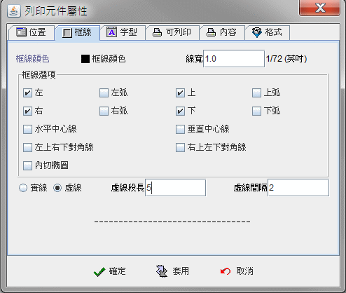
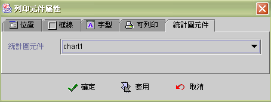

|

7.5 報表元件
(report printable components)
通用報表元件(Generic
printable component)
圖片報表元件(Image printable component)
備忘錄報表元件(Memo printable component)
統計圖報表元件(Statistic printable component)
條碼報表元件(Barcode printable component)
跳頁報表元件(Page break component)
-
框線 (frame)

-
線寬 (line
width)：框線寬度，以浮點數值 (float)
設定，單位為 1/72 inch。
-
左 (left)：左邊界框線。
-
左弧 (left )：左弧框線。
-
上 (top)：上邊界框線。
-
上弧
(top)：上弧框線。
-
右 (right)：右邊界框線。
-
右弧 (right)：右弧框線。
-
下 (bottom)：下邊界框線。
-
下弧 (bottom)：下弧框線。
-
水平中心線 (horizontal center)：列印出水平線。
-
垂直中心線 (vertical
Center)：列印出垂直線。
-
左上右下對角線 (left_top -- right_bottom)：列印出左上
到右下的框線。
-
右上左下對角線 (right_top -- left_bottom)：列印出右上到左下的框線。
-
內切橢圓 (oval)：橢圓形框線。
-
實線 (solid line)
-
虛線 (dash line)
▲Top
通用報表元件 (Generic printable component )

-
共同屬性 (common properties)
-
內容 (content)
-
純文字 (simple text)：使用文字敘述當成要列印的內容
。
-
使用運算式 (use formula)：使用運算公式
(formula) 的結果值來列印
。
-
Html 內容 (html content) ：運算式內容為
HTML 格式。 允許以 HTML tag 格式化列印資料。
-
加總 (sum result)：如果運算公式
(formula) 的結果值是數值資料，可以運用元件內部的加總功能，累計加總列印。
-
歸零 (reset to zero)：元件內部的加總功能，歸零的時機
。
-
永不 (never)：累計加總，不歸零
。(例如：全部列印資料的"金額總計")
-
列印後 (after printout)：當列印之後歸零
。(例如：列印單筆訂單的"金額小計")
-
換頁 (new page)：當換頁之後歸零
。(例如：列印單一頁次的"金額小計")
-
列印格式 (format)

-
格式 (format printout)：
設定列印資料的資料型態及列印格式。
-
Render 類別 (render type)：將資料格式化為
Render 型式。
-
格式 (format)：顯示格式樣板
(format pattern)。
-
對齊列印 (alignment printout)：
-
水平 (horizontal)：水平對齊方式。
-
垂直 (vertical)：垂直對齊方式。
-
自動轉折 (multi line )：當文字資料比顯示的範圍方塊區間還長時，自動轉折至下行。
-
行距
(row gap)：橫向列印每行間距，中文直式列印每列間距。
-
中文直排字距
(vertical character gap)：中文直式列印，每直式列印單元間距。
中文直排
(由右到左) (Chinese vertical layout -- right to left)
▲Top
圖片報表元件 (Image printable component)

▲Top
備忘錄報表元件 (Memo printable component)

▲Top
統計圖報表元件 (Statistic printable component)

▲Top
條碼報表元件 (Barcode printable component)
▲Top
跳頁報表元件
(Page break component)

跳頁時機
(page break)：跳頁 (Page break) 元件是依可列印運算公式 (formula)
的結果來判斷是否跳頁列印。元件與所擺放的位置無關，所以跳頁報表元件可擺在報表任何位置，每移動一筆資料時都會判別跳頁時機，在同一張報表可放置多個
跳頁報表元件。
▲Top
Copyright © 2001~
2004 Probe Technology . All Rights Reserved.
Questions, comments,
and suggestions to Service@probe.com.tw
|